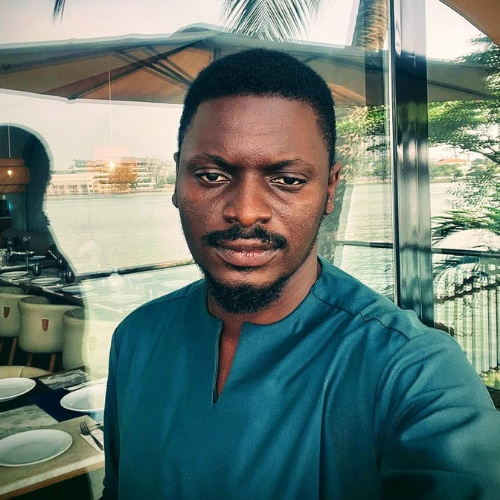

About Unmasked
Naming harm
is the first act
of ending it.
Unmasked Impact Systems Limited is a Nigerian behaviour change company. We build and facilitate play-based systems that give communities the language to recognise, name, and challenge Normalised Relation Abuse.
Where Unmasked comes from
Normalised Relation Abuse in Nigerian communities is not hidden. It happens in families, in churches, in offices, in friendships, and it is often survived in silence. Not because people do not see it, but because they do not yet have words precise enough to name what they are seeing.
“Toxic” is not a word that changes things. “He is difficult” is not a word that protects anyone. But “gaslighting”, “triangulation”, “financial abuse”, these are words that transfer power. A person who can name what is happening to them is a person who can begin to challenge it.
Unmasked was built on that conviction. Not as a campaign. Not as a hotline. As a system, a structured, facilitated, play-based experience that moves communities from silence to language, one session at a time.
The company was founded by Ireoluwa Akinrinola Akinkunmi in 2026 and is registered in Nigeria as Unmasked Impact Systems Limited. The product, including the game, the scenario bank, the Moderator's Manual, and the franchise architecture, has been designed, clinically reviewed, and built to scale across Nigerian communities and, by Year 3, across the African continent.
Our mission
“To give every Nigerian community the language to name Normalised Relation Abuse, through play, with clinical grounding, at the scale their numbers demand.”
We are not awareness. We are language.
There are many organisations doing important work to address Normalised Relation Abuse in Nigeria. Unmasked is not a substitute for any of them. We are something different: the mechanism by which communities acquire the precise vocabulary that makes all the other work possible.
Not a helpline
Unmasked does not provide crisis support. We partner with organisations that do. Our role is upstream, building the language capacity that means fewer people need a helpline, and more people are equipped to help when someone does.
Not a campaign
Campaigns end. Unmasked is a system. The programme runs across multiple sessions, with measurable outcomes, in a structured format that can be replicated by any trained facilitator in any community context.
Not therapy
Unmasked is explicitly not a therapeutic intervention. It is an educational one. Every session makes this clear to participants. We are not here to heal, we are here to name. The naming opens the door to everything else.
Founder

Ireoluwa Akinrinola Akinkunmi
Ireoluwa is the founder and chief architect of Unmasked. He built the company from a single conviction: that the gap between experiencing Normalised Relation Abuse and being able to name it is a gap that can be closed, not by institutions alone, but by communities, equipped with precise language, in a space safe enough to use it.
Unmasked is his response to that gap.
Built with clinical oversight
The Unmasked Shield taxonomy, the ten categories of Normalised Relation Abuse that sit at the heart of the programme, has been reviewed by a clinical psychologist. Every scenario card in the 100-card deck has been assessed for clinical accuracy, trauma-informed language, and safe facilitation.
Unmasked is not a clinical intervention. But it has been built with the same rigour that clinical work demands, because the communities we serve deserve nothing less.
Company information
- Company name
- Unmasked Impact Systems Limited
- Registered in
- Nigeria (CAC registration in progress)
- Founded
- May 2026
- Founder
- Ireoluwa Akinrinola Akinkunmi
- Domain
- unmasked.ng
- Social
- @withunmasked
- Contact
- hello@unmasked.ng